Quem pode entrar
Who can enter
Quién puede entrar
Ai có thể tham gia
O Championship é conteúdo de fim de jogo — ele existe para quem já provou o próprio deck contra a campanha inteira.
The Championship is endgame content — it exists for players who already proved their deck against the whole campaign.
El Championship es contenido de fin de juego — existe para quien ya probó su propio mazo contra la campaña entera.
Championship là nội dung cuối trò chơi — dành cho người đã thử bộ bài của mình qua toàn bộ cốt truyện.
- O Championship é exclusivo de quem possui a versão Founder — a versão Free não tem acesso, em nenhuma hipótese.
- The Championship is exclusive to Founder owners — the Free version has no access to it whatsoever.
- El Championship es exclusivo de quien tiene la versión Founder — la versión Free no tiene acceso, bajo ninguna circunstancia.
- Championship chỉ dành cho người có bản Founder — bản Free không có quyền truy cập, trong mọi trường hợp.
- É preciso ter derrotado o desafio final da campanha (Zorc Necrophades) antes de o Championship liberar no menu.
- You must have defeated the campaign's final challenge (Zorc Necrophades) before the Championship unlocks in the menu.
- Hay que haber derrotado el desafío final de la campaña (Zorc Necrophades) antes de que el Championship se libere en el menú.
- Bạn phải hạ được thử thách cuối của cốt truyện (Zorc Necrophades) trước khi Championship mở trong menu.
Como funciona
How it works
Cómo funciona
Cách hoạt động
10 duelos seguidos, do primeiro duelista até o Boss, sem interrupção — a dificuldade cresce naturalmente conforme os baralhos dos oponentes ficam mais fortes.
10 duels back to back, from the first duelist to the Boss, without interruption — difficulty grows naturally as opponent decks get stronger.
10 duelos seguidos, del primer duelista hasta el Boss, sin interrupción — la dificultad crece naturalmente conforme los mazos de los oponentes se fortalecen.
10 trận liên tiếp, từ đấu thủ đầu tiên đến Boss, không nghỉ — độ khó tăng dần khi bộ bài của đối thủ mạnh lên.
- Cada duelo sorteia 1 de 7 restrições: sem efeito de monstro, sem magia, sem trap, sem equipamento, Dreno Vital, Enfraquecimento dos Monstros ou Espada x Escudo.
- Each duel rolls 1 of 7 restrictions: no monster effects, no spells, no traps, no equips, Vital Drain, Monster Weakening, or Sword x Shield.
- Cada duelo sortea 1 de 7 restricciones: sin efecto de monstruo, sin magia, sin trampa, sin equipo, Drenaje Vital, Debilitamiento de Monstruos o Espada x Escudo.
- Mỗi trận rút ngẫu nhiên 1 trong 7 hạn chế: không hiệu ứng quái thú, không phép, không bẫy, không trang bị, Rút Sinh Lực, Suy Yếu Quái Thú hoặc Kiếm x Khiên.
- Ela vale só para você — o oponente joga sempre com acesso total ao próprio deck.
- It applies only to you — the opponent always plays with full access to their deck.
- Vale solo para ti — el oponente siempre juega con acceso total a su propio mazo.
- Chỉ áp dụng cho bạn — đối thủ luôn được dùng trọn vẹn bộ bài của họ.
- Efeitos de vitória automática (peças de Exodia, dados/moedas que decidem o duelo na sorte) são banidos por completo.
- Automatic win effects (Exodia pieces, luck-based instant-win dice/coins) are entirely banned.
- Los efectos de victoria automática (piezas de Exodia, dados/monedas que deciden el duelo por suerte) están totalmente prohibidos.
- Các hiệu ứng thắng tự động (mảnh Exodia, xúc xắc/đồng xu quyết định trận đấu bằng may rủi) bị cấm hoàn toàn.
- A partir da metade do Championship, a IA para de "arriscar" e passa a tomar sempre a jogada ótima disponível.
- From the halfway point on, the AI stops "gambling" and always takes the best play available.
- A partir de la mitad del Championship, la IA deja de "arriesgar" y siempre toma la mejor jugada disponible.
- Từ giữa Championship, AI ngừng "mạo hiểm" và luôn chọn nước đi tối ưu có sẵn.
Dez duelos, dificuldade crescente
Ten duels, rising difficulty
Diez duelos, dificultad creciente
Mười trận, độ khó tăng dần
Cada duelo sorteia um duelista da faixa correspondente. A força do baralho acompanha o avanço — quem aparece no duelo 8 não aparece no duelo 2.
Each duel draws a duelist from the matching tier. Deck strength follows your progress — whoever shows up in duel 8 never shows up in duel 2.
Cada duelo sortea un duelista del rango correspondiente. La fuerza del mazo acompaña el avance — quien aparece en el duelo 8 nunca aparece en el duelo 2.
Mỗi trận rút một đấu thủ từ nhóm tương ứng. Sức mạnh bộ bài tăng theo tiến độ — người xuất hiện ở trận 8 không bao giờ xuất hiện ở trận 2.
Os primeiros guardiões
The first guardians
Los primeros guardianes
Những người bảo vệ đầu tiên
Duelistas do início da campanha. Baralhos diretos, sem combos longos.
Duelists from the early campaign. Straightforward decks, no long combos.
Duelistas del inicio de la campaña. Mazos directos, sin combos largos.
Đấu thủ từ đầu cốt truyện. Bộ bài đơn giản, không combo dài.
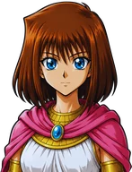
Teana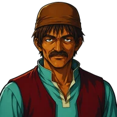
Jusell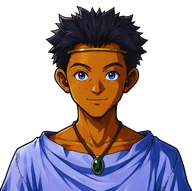
Tarik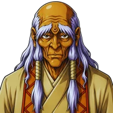
Amasis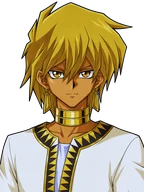
Jono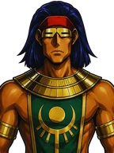
Mage Soldier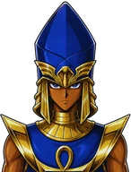
Seto Mana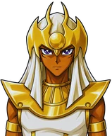
Mahad Solomon Muto Joey Wheeler Tristan Tea GardnerMagos e guardiões
Mages and guardians
Magos y guardianes
Pháp sư và người bảo vệ
Decks temáticos com campo mágico próprio e sinergia real.
Themed decks with their own magic field and real synergy.
Mazos temáticos con campo mágico propio y sinergia real.
Bộ bài theo chủ đề với sân phép riêng và sự phối hợp thực sự.
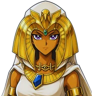
Isis Akhenaden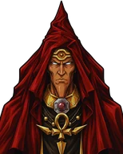
Mountain Mage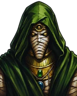
Forest Mage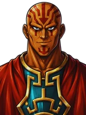
Labyrinth Mage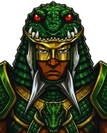
Sebek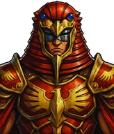
Neku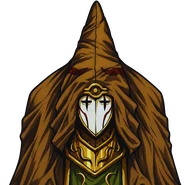
Desert Mage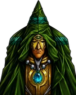
Meadow Mage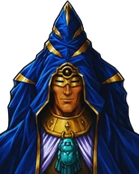
Ocean MageAltos Magos
The High Mages
Altos Magos
Các Đại Pháp Sư
A partir daqui a IA para de arriscar e passa a jogar sempre a melhor jogada disponível.
From here the AI stops taking risks and always plays the best available move.
Desde aquí la IA deja de arriesgar y siempre juega la mejor jugada disponible.
Từ đây AI ngừng mạo hiểm và luôn chọn nước đi tốt nhất.
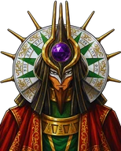
High Mage Atenza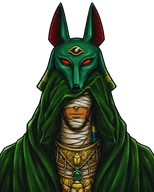
High Mage Anubisius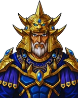
High Mage Secmeton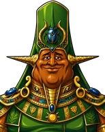
High Mage Kepura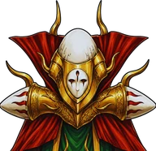
High Mage Martis Thief BakuraO confronto final
The final clash
El enfrentamiento final
Trận đối đầu cuối cùng
Um dos três chefes da campanha fecha a sequência.
One of the three campaign bosses closes the run.
Uno de los tres jefes de la campaña cierra la secuencia.
Một trong ba trùm của cốt truyện khép lại chuỗi trận.
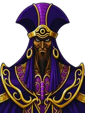
Heishin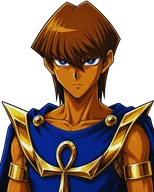
Seto Final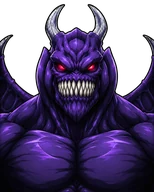
ZorcOs quatro duelistas da Season 2 entram no sorteio conforme você os derrota na campanha — quem ainda não foi enfrentado não aparece.
The four Season 2 duelists join the draw as you beat them in the campaign — anyone you haven't faced yet won't show up.
Los cuatro duelistas de la Season 2 entran en el sorteo conforme los derrotas en la campaña — quien aún no enfrentaste no aparece.
Bốn đấu thủ Season 2 tham gia bốc thăm khi bạn hạ họ trong cốt truyện — ai chưa gặp sẽ không xuất hiện.
Sete punições, uma por duelo
Seven punishments, one per duel
Siete castigos, uno por duelo
Bảy hình phạt, mỗi trận một
Antes de cada duelo o jogo sorteia uma restrição — e ela nunca repete a do duelo anterior. Vale só para você: o oponente joga com o baralho inteiro à disposição.
Before each duel the game draws a restriction — and it never repeats the previous one. It applies only to you: the opponent always plays with their full deck.
Antes de cada duelo el juego sortea una restricción — y nunca repite la del duelo anterior. Vale solo para ti: el oponente siempre juega con su mazo completo.
Trước mỗi trận, trò chơi rút một hạn chế — và không bao giờ lặp lại hạn chế của trận trước. Chỉ áp dụng với bạn: đối thủ luôn dùng trọn bộ bài.
As quatro primeiras proíbem um tipo de carta. As três últimas não proíbem nada — elas corroem o seu lado enquanto o duelo se estende, e é isso que torna o duelo longo perigoso.
The first four forbid a card type. The last three forbid nothing — they wear your side down as the duel drags on, which is what makes a long duel dangerous.
Las cuatro primeras prohíben un tipo de carta. Las tres últimas no prohíben nada — desgastan tu lado mientras el duelo se alarga, y eso es lo que hace peligroso un duelo largo.
Bốn hạn chế đầu cấm một loại thẻ. Ba hạn chế cuối không cấm gì — chúng bào mòn phía bạn khi trận đấu kéo dài, và đó là điều khiến trận dài trở nên nguy hiểm.
As chances reais
The real odds
Las probabilidades reales
Tỉ lệ thực tế
Nenhuma das duas é sorte pura: a chance sobe a cada tentativa em que o evento não aparece, e volta ao mínimo assim que ele sai. Quanto mais você tenta sem ver, mais perto fica.
Neither is pure luck: the chance rises with every attempt where the event doesn't show, and resets once it does. The longer you go without seeing it, the closer you get.
Ninguna de las dos es pura suerte: la probabilidad sube en cada intento en que el evento no aparece, y vuelve al mínimo en cuanto sale. Cuanto más lo intentas sin verlo, más cerca estás.
Cả hai đều không phải may rủi thuần túy: tỉ lệ tăng sau mỗi lượt mà sự kiện không xuất hiện, và trở lại mức thấp nhất ngay khi nó xuất hiện. Càng thử lâu mà chưa thấy, bạn càng đến gần.
Entrada, checkpoints e risco
Entry, checkpoints and risk
Entrada, checkpoints y riesgo
Vé vào, điểm lưu và rủi ro
Compre na Loja do jogo. Cada ticket vale por uma tentativa completa, consumida ao iniciar.
Buy it in the in-game Shop. Each ticket is worth one full attempt, consumed on start.
Cómpralo en la Tienda del juego. Cada ticket vale por un intento completo, consumido al iniciar.
Mua tại Cửa hàng trong trò chơi. Mỗi vé dùng cho một lượt chơi đầy đủ, tiêu hao khi bắt đầu.
Disponíveis após a 3ª e a 6ª vitória. Salvam seu progresso para não recomeçar do zero em caso de derrota.
Available after the 3rd and 6th win. They save your progress so a loss doesn't send you back to zero.
Disponibles tras la 3ª y la 6ª victoria. Guardan tu progreso para no empezar de cero si pierdes.
Có sau chiến thắng thứ 3 và thứ 6. Lưu tiến trình để bạn không phải làm lại từ đầu khi thua.
Nos mesmos pontos de checkpoint, dá para ajustar o deck e desistir do Championship sem custo adicional.
At those same checkpoint points, you can adjust your deck and quit the Championship at no extra cost.
En los mismos puntos de checkpoint puedes ajustar el mazo y abandonar el Championship sin costo adicional.
Tại chính các điểm lưu, bạn có thể chỉnh bộ bài và rời Championship mà không mất thêm chi phí.
Recompensas
Rewards
Recompensas
Phần thưởng
Ao iniciar, o jogo sorteia em segredo se o seu Championship é Normal ou Lendário — o narrador só revela qual é na luta 7. A chance de Lendário começa em 15% e sobe 1% a cada tentativa sem sair, até um teto de 20%, voltando a 15% assim que sair.
On start, the game secretly rolls whether your run is Normal or Legendary — the narrator only reveals which one on fight 7. The Legendary chance starts at 15% and climbs 1% per attempt it doesn't hit, up to a 20% cap, resetting to 15% the moment it does.
Al iniciar, el juego sortea en secreto si tu Championship es Normal o Legendario — el narrador solo lo revela en la pelea 7. La probabilidad de Legendario empieza en 15% y sube 1% por intento sin salir, hasta un tope de 20%, volviendo a 15% en cuanto salga.
Khi bắt đầu, trò chơi bí mật quyết định Championship của bạn là Thường hay Huyền Thoại — người dẫn chuyện chỉ tiết lộ ở trận 7. Cơ hội Huyền Thoại bắt đầu ở 15% và tăng 1% mỗi lượt không ra, tối đa 20%, rồi trở lại 15% ngay khi ra.
- 3.000 Stars
- 100 Souls
- 1 Ticket GoldGold TicketTicket GoldVé Gold
- 10 cartas, com 1 UR garantidacards, with 1 guaranteed URcartas, con 1 UR garantizadathẻ, đảm bảo 1 UR
- Pool de 2 boosters normais + 1 booster temático, todos sorteados
- Pool of 2 random normal boosters + 1 random themed booster
- Pool de 2 boosters normales + 1 booster temático, todos sorteados
- Nhóm 2 booster thường + 1 booster chủ đề, tất cả đều ngẫu nhiên
- Pequena chance extra de a UR garantida ser uma das 3 Divine Beasts
- Small extra chance the guaranteed UR is one of the 3 Divine Beasts
- Pequeña probabilidad extra de que la UR garantizada sea una de las 3 Divine Beasts
- Cơ hội nhỏ để UR đảm bảo là một trong 3 Divine Beasts
- Cartas SR/UR repetidas no prêmio já desbloqueiam a versão Full Art (se você já tiver 1 cópia normal)
- Duplicate SR/UR cards in the prize unlock the Full Art version right away (if you already own 1 normal copy)
- Las cartas SR/UR repetidas del premio ya desbloquean la versión Full Art (si ya tienes 1 copia normal)
- Thẻ SR/UR trùng lặp trong phần thưởng sẽ mở khóa bản Full Art (nếu bạn đã có 1 bản thường)
- Abre a chance de o Portal do Torneio Sombrio aparecer ao coletar o prêmio
- Unlocks the chance for the Shadow Tournament Portal to appear when you collect the prize
- Abre la posibilidad de que aparezca el Portal del Torneo Sombrío al reclamar el premio
- Mở khả năng xuất hiện Cổng Giải đấu Bóng Tối khi nhận phần thưởng
Os Deuses Egípcios
The Egyptian God Cards
Los Dioses Egipcios
Các Vị Thần Ai Cập
Slifer the Sky Dragon, Obelisk the Tormentor e The Winged Dragon of Ra — as três lendárias, com arte especial reservada a quem vence um Championship Lendário.
Slifer the Sky Dragon, Obelisk the Tormentor and The Winged Dragon of Ra — the three legendaries, with special art reserved for those who win a Legendary Championship.
Slifer the Sky Dragon, Obelisk the Tormentor y The Winged Dragon of Ra — las tres legendarias, con arte especial reservada a quien gana un Championship Legendario.
Slifer the Sky Dragon, Obelisk the Tormentor và The Winged Dragon of Ra — bộ ba huyền thoại, với tranh đặc biệt dành riêng cho người thắng Championship Huyền Thoại.


Torneio Sombrio
Shadow Tournament
Torneo Sombrío
Giải đấu Bóng Tối
Um portal secreto que pode aparecer ao coletar o prêmio de um Championship Lendário. A chance começa em 30% e sobe 5% a cada vitória Lendária em que ele não aparecer, até um teto de 50%, voltando a 30% assim que aparecer.
A secret portal that can appear when you collect a Legendary Championship's prize. The chance starts at 30% and climbs 5% per Legendary win it doesn't appear, up to a 50% cap, resetting to 30% the moment it does.
Un portal secreto que puede aparecer al reclamar el premio de un Championship Legendario. La probabilidad empieza en 30% y sube 5% por cada victoria Legendaria en que no aparezca, hasta un tope de 50%, volviendo a 30% en cuanto aparezca.
Một cổng bí mật có thể xuất hiện khi nhận thưởng từ Championship Huyền Thoại. Cơ hội bắt đầu ở 30% và tăng 5% sau mỗi chiến thắng Huyền Thoại mà nó không xuất hiện, tối đa 50%, rồi trở lại 30% ngay khi xuất hiện.
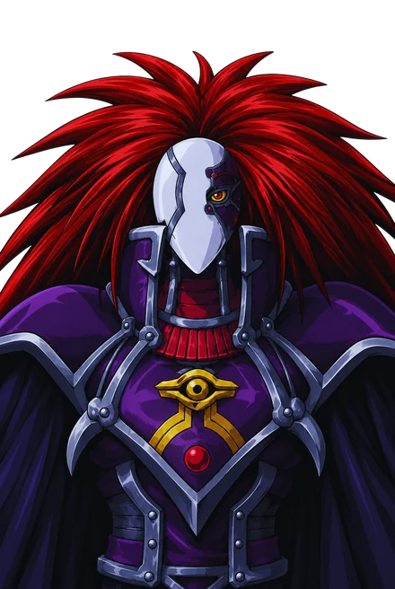
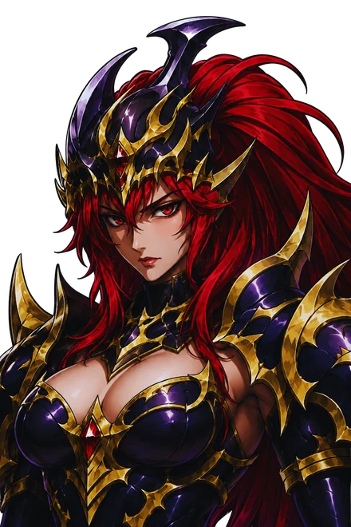
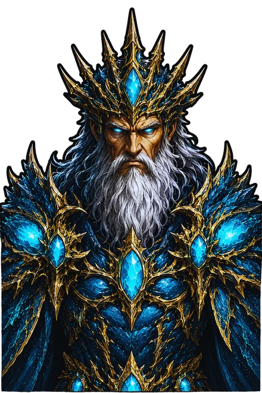
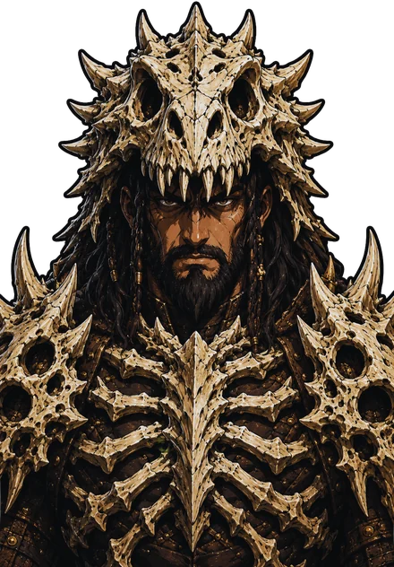
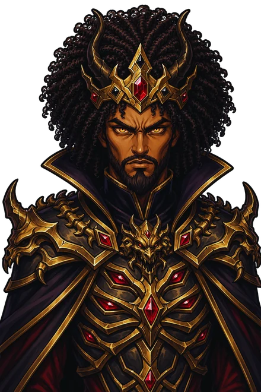
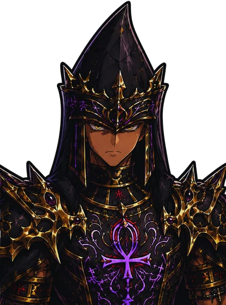
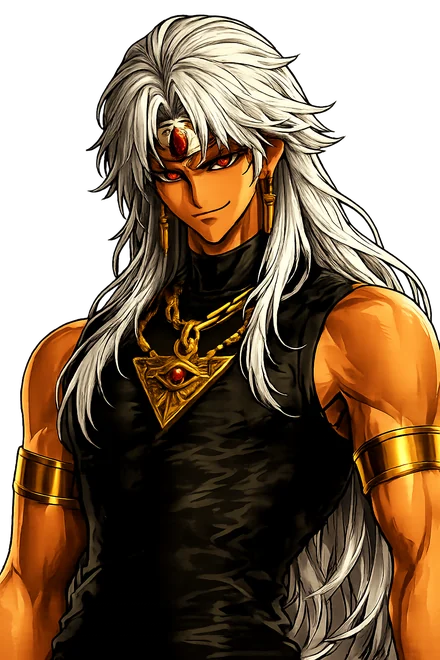
Quatro duelos, sem checkpoint e sem volta: perder qualquer um encerra o evento na hora. Os dois primeiros são sempre os mesmos; o terceiro e o chefe são sorteados a cada entrada.
Four duels, no checkpoints and no way back: losing any of them ends the event on the spot. The first two are always the same; the third and the boss are drawn on every entry.
Cuatro duelos, sin checkpoints y sin vuelta atrás: perder cualquiera termina el evento al instante. Los dos primeros son siempre los mismos; el tercero y el jefe se sortean en cada entrada.
Bốn trận, không điểm lưu và không đường lui: thua bất kỳ trận nào là sự kiện kết thúc ngay. Hai trận đầu luôn cố định; trận thứ ba và trùm được bốc thăm mỗi lần vào.
- Great Shadow Magus e Black Luster Valkyrie, sempre nessa ordem
- Great Shadow Magus and Black Luster Valkyrie, always in that order
- Great Shadow Magus y Black Luster Valkyrie, siempre en ese orden
- Great Shadow Magus và Black Luster Valkyrie, luôn theo thứ tự đó
- Um duelista sorteado entre Poseidon, King of the Oceans e Lord D. Saurian
- A duelist drawn from Poseidon, King of the Oceans and Lord D. Saurian
- Un duelista sorteado entre Poseidon, King of the Oceans y Lord D. Saurian
- Một đấu thủ ngẫu nhiên trong Poseidon, King of the Oceans và Lord D. Saurian
- Um chefe final sorteado entre Kiram Overlord, Seto Corrupted e Azzazel, Arquiduque Infernal
- A final boss drawn from Kiram Overlord, Seto Corrupted, and Azzazel, Archduke of Hell
- Un jefe final sorteado entre Kiram Overlord, Seto Corrupted y Azzazel, Archiduque Infernal
- Một trùm cuối ngẫu nhiên trong Kiram Overlord, Seto Corrupted và Azzazel, Đại Công Tước Địa Ngục
- 666 Stars ++++ 66 Souls
- Escolha entre 1 UR garantida ou 1 carta em Full Art — as duas são reveladas e você fica só com a que escolher
- Choose between 1 guaranteed UR or 1 Full Art card — both are revealed and you keep only the one you pick
- Elige entre 1 UR garantizada o 1 carta en Full Art — ambas se revelan y te quedas solo con la que elijas
- Chọn giữa 1 UR đảm bảo hoặc 1 thẻ Full Art — cả hai đều được lộ ra và bạn chỉ giữ thẻ mình chọn
- 5% de chance de uma carta Custom bônus, garantida independente da escolha
- 5% chance of a bonus Custom card, guaranteed regardless of your choice
- 5% de probabilidad de una carta Custom de bono, garantizada sin importar la elección
- 5% cơ hội nhận thêm một thẻ Custom, đảm bảo bất kể bạn chọn gì
Termine a campanha, monte o melhor deck que conseguir e compre seu Ticket de Torneio na Loja do jogo.
Finish the campaign, build the best deck you can, and buy your Tournament Ticket in the in-game Shop.
Termina la campaña, arma el mejor mazo que puedas y compra tu Ticket de Torneo en la Tienda del juego.
Hoàn thành cốt truyện, dựng bộ bài tốt nhất có thể và mua Vé Giải đấu tại Cửa hàng trong trò chơi.
☥ Seja Founder ☥ Become a Founder☥ Sé Founder☥ Trở thành Founder